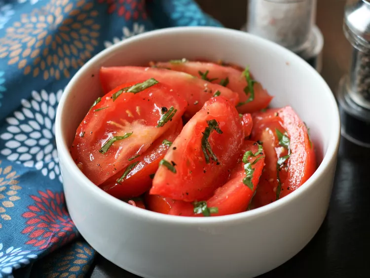

10-Minute Tomate Basil

Description
This salad with tomatoes and basil is perfect for summer and delightfully delicious!
Ingredients
- 1 large tomato, cut into wedges
- 1 tablespoon chopped fresh basil
- 1 tablespoon extra-virgin olive oil
- 1 ½ teaspoons red wine vinegar, or to taste
- 1 pinch salt and ground black pepper, or to taste (Optional)
Steps
- Combine tomato, basil, olive oil, red wine vinegar, salt, and black pepper in a large bowl; toss until evenly coated.